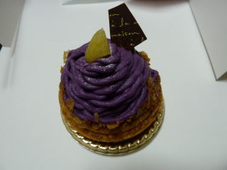

ラ・セゾンでボックス売ってました
2010/10/25
お買い得なボックスが販売していました。

紫いものモンブランですかね？紫芋の味ってよくわからないですけど、さつま芋味で甘いケーキでした。土台のクッキー部分が特に甘くて好きでした。
島根県出雲市天神町884-1
閉店しました。
2010/10/25
お買い得なボックスが販売していました。

紫いものモンブランですかね？紫芋の味ってよくわからないですけど、さつま芋味で甘いケーキでした。土台のクッキー部分が特に甘くて好きでした。
2008/6/16
買いに行かなかったですけど、今日はラ・セゾンで「開店27周年記念 お客様感謝祭」でした。
1800円相当の詰め合わせのボックスが1000円で販売なのでお得ですね。
前日に甘いものを食べたので止めときました。
2007/11/27
今日の新聞の折込広告に、ラ・セゾンの「お客様感謝祭」のチラシがあったので買いました。
秋の新作ロール660円相当、秋のモンブラン3種1050円相当の計1710円分が1000円で販売してました。
お得ですね。
しかもケーキばっかりです。焼き菓子やプリンとかのセットよりも、ケーキばっかりのセットの方が私は好きなので「これはいいセットだ！」って思いました。
秋の新作ロールはラズベリーでしょうか？赤いベリー系のつぶつぶが入ってました。
ちょっとつぶつぶが固いのが感が気になりましたが、ふんわりしたスポンジの食感にクリームのマイルドな甘さがとっても美味しかったです。
ここのスタンダードな感じのロールケーキは結構好きです。
2007/10/20
最近竹炭ロールケーキっていろんな所で販売してますね。
「何も炭を食べなくてもいいでしょう。」って思っていたんですが、メディアなんかで見てちょと気になったので挑戦してみました。
でも炭って木の焦げたのですよね。野菜の焦げたのは体に悪いって食べないのに木はオッケーって変ですね。
今回食べたのは、マロンクリーム入りの竹炭ロールです。
普通のクリームとマロンクリームが入ってて、クリームが多いです。手に持つとずっしりとした感じがしました。
まず食べてみて、噛むと「シャリシャリ」ってする食感にびっくりしました。「本当に炭が入ってる！！」と思いました。新食感ですね。
味は甘さが濃い系でした。マロンクリームの甘さが特に濃いって思いました。
色も炭色で濃いので、見た目通りな感じでした。
2007/7/14
今日はジャスコ出雲店で、ケーキが2割引きでお買い得だったので、ちょっと変わったケーキに挑戦してみました。
食べたのはブリュレ、柚子シフォン、夏見大福です。
ブリュレは普通のスポンジケーキの上にカスタードクリームが乗ったケーキでした。
苺じゃなくてクリームのショートケーキですね。クリームいっぱいです。
柚子シフォンは、柚子シフォンって名前なのにケーキの上や間に苺がありました。意外でしょ？
ちょっと固いシフォンには柚子がしっかり入っているので、苺味よりも柚子味のほうが断然強いので柚子シフォンって名前でもいいのかな～って感じでした。
フルーツケーキっぽいなって思いました。
夏見大福はみかんの大福です。求肥がたっぷり使ってあるので、求肥味を堪能出来ました。普段ここまで求肥の味を意識する事はなかったので新鮮でした。
大福っていっても餡は無くて、クリームと甘いオレンジソースが入ってるだけでした。
今回変わったものばかり食べたので、次は定番商品を食べたいと思いました。
2006/11/19
ちょっと厚めで、パイっぽい生地のシュークリームです。生地がしっかりしてるので、ぽろぽろクズが落ちないですし、噛んだときにふにゃってして形が崩れないのでなかなかいいですね。
甘いクリームとも相性がよく、美味しかったです。
2005/11/26
ジャスコ出雲店内のラ・セゾンで苺のムースを買って食べました。
最近クリスマスケーキのチラシで苺をよく見るので、なんとなく苺ものが食べたくなったので選びました。
大きさがわりと大きいケーキだったので、ふんわりした食感のムースに、味も軽めで甘さも軽めな感じになってました。
これはこれでいい感じですが、イチゴものが食べたいって気分だったので、ちょっと控えめな味がものたりなかったです。
クリスマスには甘いイチゴのケーキが食べたい気分になりました。
2005/10/24
今日、明日はラ・セゾン洋菓子店でモンブランのセットが安売りしているので買ってみました。
で、まず普通のモンブランを食べたんですが、栗のクリームが美味しいですね。
甘すぎず、栗の味もちゃんとあって、口当たりも良かったです。
あと、中に入っている生クリームも美味しかったです。変な例えですが、ヤマザキのまるごとバナナにはいっている生クリームみたいな感じで、個人的には好きな味でした。